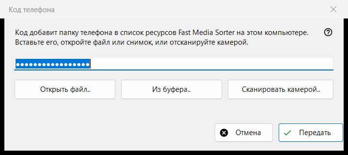
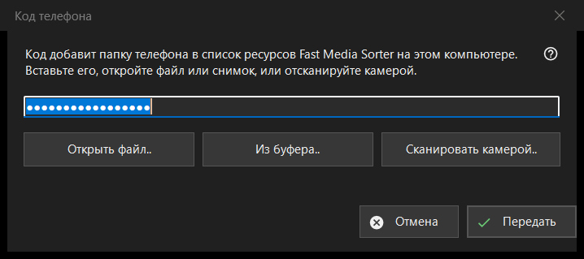

Код телефона
Назначение
Принимает код подключения, созданный приложением на телефоне, и передаёт его в Fast Media Sorter, который добавляет папку телефона в список ресурсов на этом компьютере. Окно открывается кнопкой «Код телефона..» в главном окне Share Manager.


Порядок действий
- Получите код одним из четырёх способов: введите или вставьте его в поле, нажмите «Открыть файл..», нажмите «Из буфера..» или «Сканировать камерой..».
- Нажмите «Передать».
- Подтвердите добавление папки в появившемся окне Fast Media Sorter.
Элементы окна
Код подключения
Однострочное поле, в котором вместо символов видны точки, потому что код - секрет; в журнал он не записывается. Если нажать «Передать» при пустом поле, окно попросит ввести код, вставить его или открыть файл или снимок.
Файл, буфер и камера
«Открыть файл..» читает файлы .fmscfg, .json и .txt и изображения с QR-кодом (.png, .jpg, .jpeg, .bmp, .webp); файл можно также перетащить в окно. «Из буфера..» читает код из буфера обмена. «Сканировать камерой..» открывает окно камеры, а отсканированный текст обрабатывается так, будто его вставили.
Передать
Код проверяется и отправляется запущенному Fast Media Sorter, чей собственный диалог импорта по-прежнему задаёт свои обычные вопросы. При успехе строка состояния сообщает «Код передан: подтвердите добавление в окне Fast Media Sorter.», и окно закрывается. Если Fast Media Sorter не найден, старой версии или не отвечает, код помещается в буфер обмена с пометками конфиденциальности, а строка состояния предлагает вставить его через «Импорт из буфера» в панели ресурсов.
Сообщения в строке состояния
Документ, который не читается как код подключения или файл настроек ресурса, объявляется нечитаемым. Файл, созданный более новой версией, просит обновить Fast Media Sorter. Если буфер обмена занят другой программой, строка состояния сообщает об этом.
Настройки менеджера · Настройки общего доступа SFTP · Настройки сервера обмена